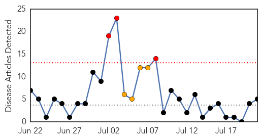
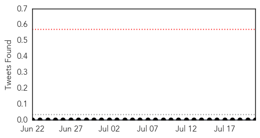
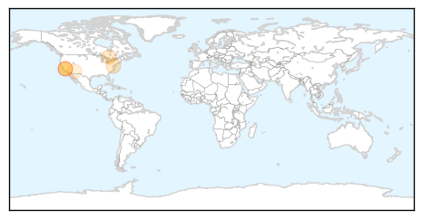
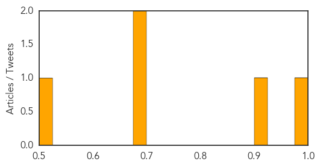

Bubonic Plague
30-Day Web Trend
2 alerts, 0 warnings

30-Day Twitter Trend
0 alerts, 0 warnings

Article Locations

Article Confidences

Top Articles:
Top Tweets:
-
No tweets found for Jul 21, 2015
Measles
30-Day Web Trend
3 alerts, 4 warnings

30-Day Twitter Trend
0 alerts, 0 warnings

Article Locations
Article Confidences
Top Articles:
- 0.995
- Which Ones You Need, Which Ones You Don't
- 0.901
- Vaccinations Required for Calif. Day Care Center Workers Under Bill Introduced by Senator Mendoza - SB 792
- 0.692
- Canada still falling short of herd immunity, reveals new report
- 0.690
- Report shows breadth of SDHU's work
- 0.508
- Anti-vaccine witch hunt FAIL: Dr. Jack Wolfson cleared of all charges for exercising his free speech rights on the issue of vaccine risks and the stupidity of blind medical obedience
Top Tweets:
-
No tweets found for Jul 21, 2015